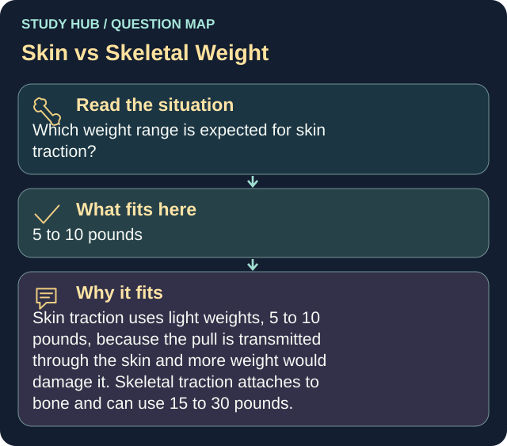

Which weight range is expected for skin traction?
Answer
5 to 10 pounds
Reasoning
Skin traction uses light weights, 5 to 10 pounds, because the pull is transmitted through the skin and more weight would damage it.
Clinical detail
Skeletal traction attaches to bone and can use 15 to 30 pounds.
Why the other answers do not fit
- 1 to 4 pounds
Skin traction uses light weights, 5 to 10 pounds, because the pull is transmitted through the skin and more weight would damage it.
- 15 to 30 pounds
Skeletal traction attaches to bone and can use 15 to 30 pounds.
- 30 to 45 pounds
Skeletal traction attaches to bone and can use 15 to 30 pounds.
